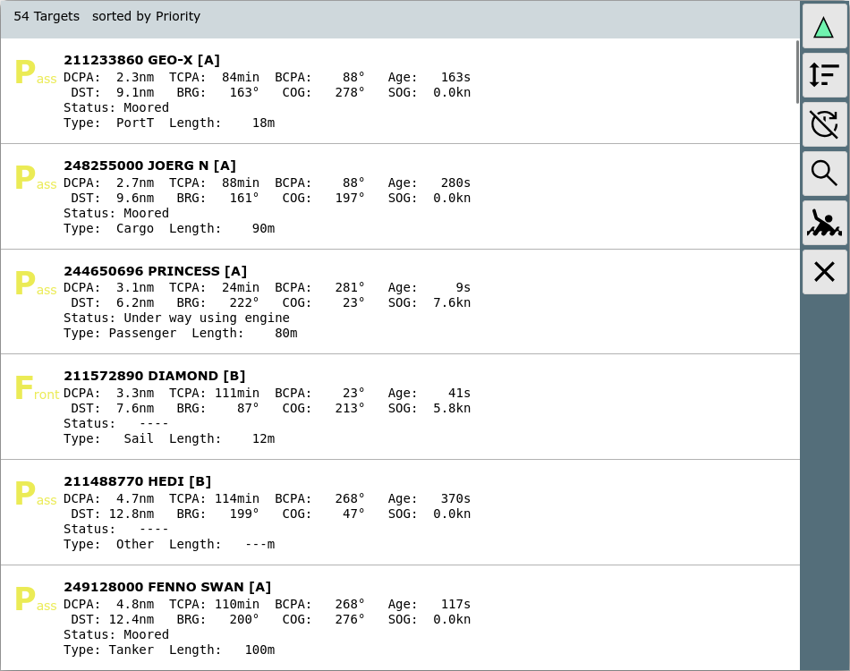

From the Ais Info you get here by
clicking the  button.
button.

| Icon | Name | Function |
| AisNearest | back to "normal mode", the closest target will be displayed centered on the navigation page | |
| AisSort | change the sort order of the list | |
| AisLock | disable the automatic list update (toggle) | |
| AisSearch | filter the shown ais targets. A filter dialog will be shown to input a search item. This will be machted against: name,mmsi,callsign,shipname. Only matching items will be shown in the list. As the button is a toggle button the second click will disable the filter. |
|
| MOB | man over board (see main page) | |
| Cancel | back to previous page |
This page lists all targets within a 10nm range to the current position or to the center of the chart (sorted by CPA). By clicking a row you will return to the chart centered to this target.
By clicking either second column heading or the  button you can change the sort order.
button you can change the sort order.
Clicking an item in the list will bring you to the aisinfo
page for this item.